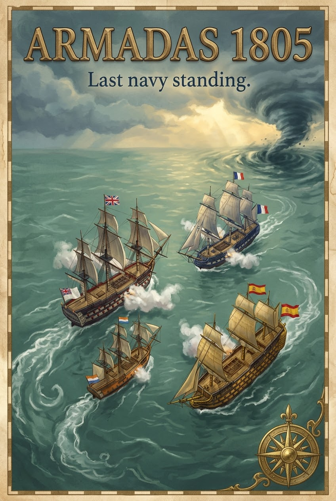

This website has been hand coded during the development of my coding slills, I have been learning the skill as a side hobby in order to potentially create apps or utilities for myself in the future, on top of this it is a potentially marketable skill that has a high ROI if I give it time to develop. This website will be the page used to reflect on each lesson and practice the skills I learn over time. To start off with I had ChatGPT generate me a lesson plan with steps for me to work through and a quiz at the end to test knowledge. Its final suggestion was to start a web page to actually put the code into use. below are the steps we walked through in Lesson one
To begin learning code ChatGPT got me started with HTML, the initial focus was on the true name and purpose of HTML as a language. The name HTML is an abbreviated format of Hypertext Markup Language, its purpose is to create structure and content on a website or web apppication, defining elements such as; Headings, paragraphs and buttons.
Now that ive learnt more about the definition and purpose of HTML, ChatGPT moved me on to learning the very basics of tagging. Tagging is what allows HTML to identify the size and context of a piece of text, it also distinguishes between opening and closing points of a "dialoge" in the language. Examples of this include starting paragraphs and headings or outlining headers and bodies of pages.
This step focused on teaching me the standard way to open a HTML page as well as the positioning of each section of code within the total document, By learning this step it allowed me to begin working on this website as I had the nessacary knowedge to structure the information I wanted to display, in the order and format I wanted to, in future lessons I will have to learn how to incorporate new steps into what ive already built.
Coming toward the end of the lesson ChatGPT taught me some key elements for website development when using HTML, this included a reminder on paragraphs and headings, then moving on to cover breaks in text, Bold & Italic text and how to list text with either bullet points or numbered points. These skills allowed me to seperate text to improve aesthetics, list out the steps covered in this document as seen at the top of this document and make headings stand out with embolding and italics. For further page customisation and aesthetic control my page would need to incorporate CSS, a styling focused coding language.
The final step in Lesson was a lot shorter than all the other steps besides the first one, it adds two last features that can change the way a user sees and interacts with the website, Images and Links. Below I have attached a poster and a Link to another one of my github Repositories for a Naval warfare game Ive been developing over the past few weeks using a range of tools from Claude Ai to a New tool released recently, freebuff Ai which is specifically designed to write complex code for users and interact directly with their preexisting repositories or code files, It also comes at no cost with an advertising focused income stream

This poster is a first visual marleting piece for my first major coding project, a naval sailing and combat game set in 1805 southern america, players command their navies across a vast and realistically mapped scale version of Southern mexic, the caribean, south america and the arctic. The aim is to sink all rival navies and control the waves"